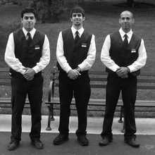

Bienvenido a la pizzeria Corranza en donde se te llena toda la panza!! Nosotros empezamos en 1945 los propietarios de este restaurant somos Charly Aguirre y mi mejor amigo Anastacio Flores. Desde muy chicos soñamos con tener un restaurante no sabiamos aún que clase de restaurante y que tipos de platillos serviriamos pero al pasar los años fuimos a un tour por europa y llegamos a una venta de comida rapida la cual nos imnotizo y nos encanto asi es que decidimos recrearla aqui en Guatemala.
